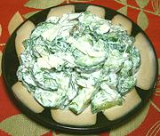

|
Cucumber Salad w/ Pickles, DillUSA, Midwest | ||||
| Makes: Effort: Sched: DoAhead: |
2-1/2 # ** 1-1/4 hrs A day |
A variation on the normal cucumber, sour cream and dill salad, adding the tang of pickles. The pattern recipe is by Paul Virant, a chef working with pickled and preserved foods. | |||
|
1-1/2 6 2 8 1/2 2/3 2 1/4 |
# oz t oz c c T t |
Cucumbers (1) Onion, sweet Salt Pickles (2) Dill, fresh Sour Cream Pickle Juice Pepper |
Make - (1-1/4 hr - 20 min work)
|